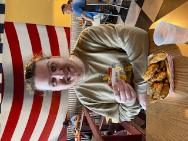

Contents
About Me
Hi there, my name is Ethan and this is my website. I am a second year student at Dallas College, specifically Richland, and am studying Software Development. I was initially interested in mechanical engineering out of high school but decided that it wasn't the career for me and switched into computer science, specifically software development, where I discovered just how much I love coding and programming!
Speaking of high school, I attended Richardson High School and was in the robotics magnet there. Don't let the name of that magnet fool you as it was less robotics as it was manufacturing, much to my disappointment. Despite my expectations being a little let down, the magnet was still very valuable as it helped to shape the way I view problems presented to me, and as such, when I am presented with a problem I attempt to break it down into managable pieces as to not overwhelm myself and mke the issue worse.
Developer Identity
I would say that my "Developer Identity" is still being fleshed out simply because I still don't have much experience with programming as a whole. At the time of writing I have only taken one true programming class, that being Programming Logic and Design. My thought process when approaching programming is definitely one of hesitancy based purely on inexperience, however, as I said above, I like to break down problems presented to me into pieces to give myself a broader view of what is being asked of me.
"A journey of a thousand miles begins with a single step." A quote that I try to live by in my development process as, in my eyes, any progress is better than no progress. Even if you have to go back later and change what you added or fully delete your progress, you still made that first step and put something down.
Learning Journey
My journey into programming has definitely been a long and winding one as this path was not what I started down. As stated above, I started down the path of mechanical engineering and even attended a full year of schooling with mechanical engineering as my major. Clearly that school and major did not turn out otherwise I would not be writing this and you would not be reading this.
After that year I took a gap year to kind of figure out what exactly I wanted to do. I took a couple online classes that ended up going nowhere but got me interested in programming as a whole so I decided that I had been sitting doing nothing for long enough and enrolled for some classes at Dallas College. It was definitely daunting to go back to school but it was a good change for me as it provided structure to an otherwise unstructured day.